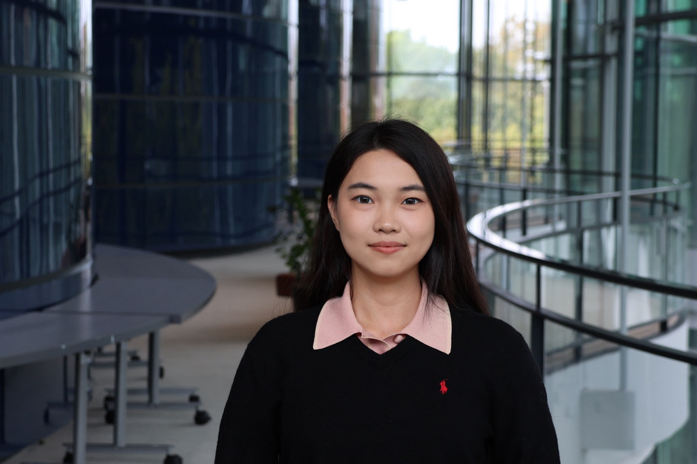

Political Economy · Industrial Policy · Climate Governance
Welcome to my personal website!
I am a recent graduate of Yale School of Management, with a background in Mathematics and Computer Science and experience in investment and corporate strategy. This is where I document my research, writing, and some of the academic work that has shaped my thinking.
Maths and Computer Science
I began my studies in Mathematics and Computer Science at Durham University in the UK. I was initially drawn to the structure of mathematical problems and the ability of computer science to turn abstract ideas into practical tools. But over time, I became increasingly interested in what these tools could help us understand. One of my favourite courses was Computational Modelling in the Humanities and Social Sciences. It showed me that techniques developed for formal and technical systems could also be used to study questions about people, institutions, and society. That experience shifted my interests. I became less interested in technology as an end in itself, and more interested in how technology changes the way businesses and societies operate. That led me to business school.
